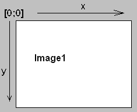

Grafika
Na kreslenie na plochu je viacero možností, je vhodné si do formulára vložiť objekt Image (karta Additional), niečo ako stôl na kreslenie, vkladanie obrazkov.
Jeden z objektov patriacich Image je Canvas, čo je ako maliarske plátno a naň už možno umiestňovať grafické obekty - kresliť,. Hlavnou výhodou je:
- väčšie množstvo farieb
- "ľubovoľná" veľkosť maliarskeho plátna (rozlíšenie XxY)
- podstatne väčšia množina grafických príkazov
- animácie neblikajú (blikanie sa dá potlačiť)
- možnosť používať časovač v animáciách
Nevýhodou stále ostáva pomalosť vykreslovania - máloktorá hra je písaná v takejto základnej grafike - ak chceme
vykreslovať 3D objekty v reálnom čase aj s viditelnosťou, musíme siahnuť po nástrojoch OpenGl alebo DirectX.
- Začíname
- Vložíme grafický objekt Image1 na plochu a určíme mu nami zvolenú veľkosť. Ak teraz spustíme aplikáciu
budeme zaskočený, že sa nám na ploche tento objekt neobjavil. Treba si zapamätať, že objekt Image1 sa zobrazí až po
nakreslení nejakej čiary alebo plochy. Ja to riešim tak, že vo FormCreate dám príkaz na zotretie kresliacej plochy
(v skutočnosti cez celú kresliacu plochu nakreslím biely obdĺžnik).
Image1.Canvas.FillRectangle(Image1.ClientRect);
Podrobnejšie tento príkaz bude popísaný v časti Kreslenie plôch.
Keď teraz pustíme aplikáciu vidíme objekt Image1 ako biely obdĺžnik položený na Forme.

Polohu bodu v Image1 možno zadávať pomocou dvojíc [x,y] kde x udáva vodorovnú
vzdialenosť bodu od ľavého okraja Image1.
a y udáva zvislú vzdialenosť od horného okraja Image1
Treba si zvyknúť, že y-súradnica je oproti matematike orientovaná opačne (zväčšovaním hodnoty klesáme a nie stúpame).
- Počiatočné hodnoty
- Základné kreslené prvky majú nastavené počiatočné vlastnosti:
Počiatočná poloha gr. kurzora: [0;0] (vľavo hore)
Čiary - farba-čierna, hrúbka-1, style-solid (súvislá)
Plochy- farba-biela, style-solid (súvislá)
- Práca s farbami
- Na určenie farby objektov v štádiu tvorby projektu využijeme vlastnosť Color
a vyberieme si z ponúkaných farieb.
Ak chceme meniť farbu za behu programu, môžeme použiť nasledovné postupy:
- Vlastnosti Color priradíme slovné označenie farby (napr. clred)
- Vlastnosti Color priradíme číselné označenie farby - 0x00bbggrr, ide o štvoricu bajtov
- Vlastnosti Color priradíme funkciu RGB(r,g,b), kde r,g,b sú čísla 0..255
- Použijeme objekt ColorBox, kde si užívateľ môže vybrať farbu, vybraná farba je vo vlastnosti Selected
- Použijeme objekt ColorDialog, zvolená farba je vo vlastnosti Color
- Použijeme objekt CColorGrid, kde užívateľ ľavým tlačídkom myši volí farbu fg (farba čiar)
pravým tlačídkom volíme farbu bg (farba plôch)
- Použijeme 3 objekty ScrollBar, na každom necháme užívateľa, aby nastavil jas farby a pomocou RGB vytvoríme výslednú farbu.
Viac o zadávaní farieb si pozri kap. Začíname/Farby